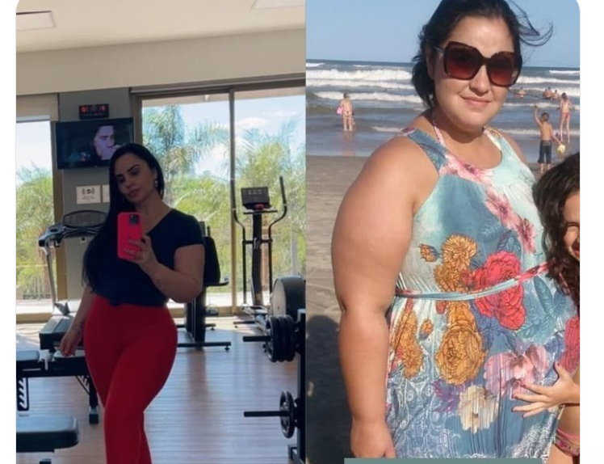
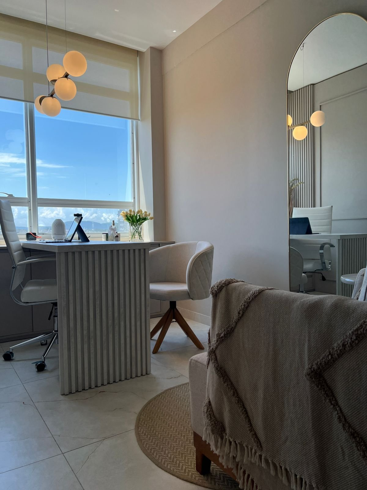
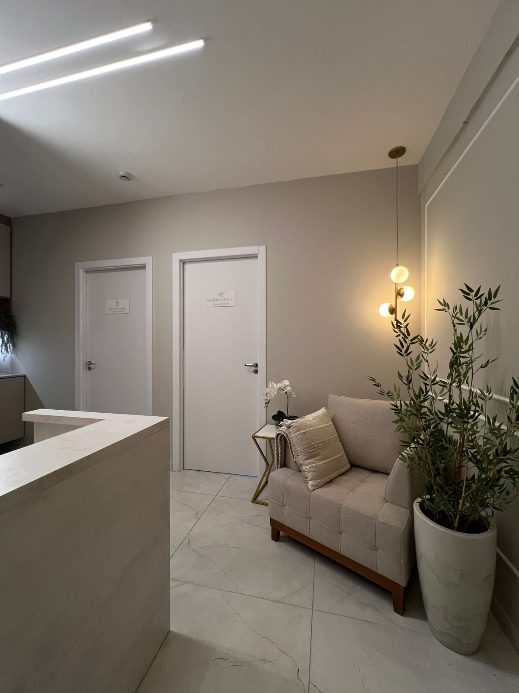

Unindo a ciência do comportamento à sua
liberdade alimentar.
Juliana Peker eliminou mais de 40 kg sem remédio e sem cirurgia bariátrica. Hoje ela atende em Gravataí com o mesmo método que usou.
Vivência pessoal real
Eliminados sem remédio e sem cirurgia bariátrica.

Para essa Juliana existir, essa precisou parar de pular de dieta em dieta.
O que a gente trabalha em cada frente
Fome emocional
- Mapeamento de gatilhos
- Diferenciação de fomes
- Diário de conexão
- Gestão de ansiedade
- Ressignificação do prazer
Nutrição sem dieta
- Técnicas de mindful eating
- Fim do terrorismo alimentar
- Protocolo comportamental
- Autonomia nas escolhas
- Foco em saúde, não em números
Reabilitação metabólica
- Resgate da bioindividualidade
- Educação nutricional crítica
- Flexibilidade metabólica
- Recuperação da microbiota
- Alinhamento circadiano
Pós-emagrecimento
- Consolidação de hábitos
- Plano de gestão de crises
- Suporte de transição
- Blindagem psicológica
- Monitoramento periódico
Ela não leu sobre o problema. Ela viveu o problema.
Ela não aprendeu o método num curso e saiu aplicando. Ela viveu o problema: anos pulando de dieta em dieta, perdendo peso e recuperando tudo de volta — até entender que o que faltava não era mais restrição, era entender o porquê de comer.
Nutricionista comportamental, pós-graduada em Emagrecimento e Nutrição Comportamental, especialista em transtornos alimentares. Eliminou mais de 40 kg sem medicação e sem cirurgia bariátrica.
Juliana Peker
Nutricionista Comportamental
É por isso que as pacientes dizem a mesma coisa: ela sente o que elas sentem.


Formação
- check_circle Nutricionista comportamental.
- check_circle Pós-graduada em Emagrecimento e Nutrição Comportamental.
- check_circle Especialista em transtornos alimentares.
Três etapas, nenhuma delas é uma dieta.
Investigação clínica
Análise dos marcadores bioquímicos e do comportamento alimentar. Antes de montar qualquer plano, entender o que o corpo e a rotina estão dizendo.
Planejamento estratégico
Plano bioindividual construído sobre ciência comportamental. Nada de cardápio padrão: o que funciona pra você depende de como você come, não só do que você come.
Consolidação de resultados
Monitoramento e ajuste fino ao longo do tempo. O acompanhamento não termina quando o número da balança chega — é aí que ele passa a valer mais.
Cada etapa é acompanhada de perto, com suporte ativo entre as consultas.
Agendar consulta“Vc é maravilhosa, sente o que a gente sente, isso faz muita diferença.”
Conversas reais de pacientes, no WhatsApp do consultório.
Dúvidas que chegam quase toda semana
É uma dieta com gramas e horários rígidos? expand_more
Funciona pra quem já sofre com efeito sanfona? expand_more
Tem uso de remédio para emagrecer? expand_more
O que é nutrição comportamental, na prática? expand_more
Atende quadros de compulsão alimentar? expand_more
Tem suporte entre uma consulta e outra? expand_more
O primeiro passo
é uma conversa.
chat
Chamar no WhatsApp
Gravataí, RS
Endereço
Rua Anápio Gomes, 2000 - Sala 710
Centro, Gravataí - RS, CEP 94010-010
Telefone & WhatsApp
(51) 9907-7507Atendimento
Segunda a quinta, 8h às 19h
Sexta e sábado, 8h às 13h